무엇을 만들었나
빈 Godot 프로젝트 하나에 게임 아이디어만 들고 시작해요. 그림 에셋도, 코드도 없어요. 발표자는 Claude Opus 5.5를 가장 높은 노력 단계로 돌려 게임을 끝까지 만들게 하고, 그림은 전부 SpriteCook MCP로 그리게 했어요.
만든 게임은 2D 메트로배니아 'Overdue'예요. 문 닫은 비디오 대여점에 마지막 직원으로 남은 주인공이, 살아 움직이는 테이프와 기계를 피해 방을 하나씩 지나가요. 정지·되감기·빨리감기 같은 시간 능력을 얻을수록 새 구역이 열리고, 마지막 보스를 쓰러뜨려야 탈출해요. 아래는 완성본의 메인 화면이에요. 대여점 카운터 앞에 주인공이, 창가에 유령 적이 있고 오른쪽에 메뉴가 떠 있어요.
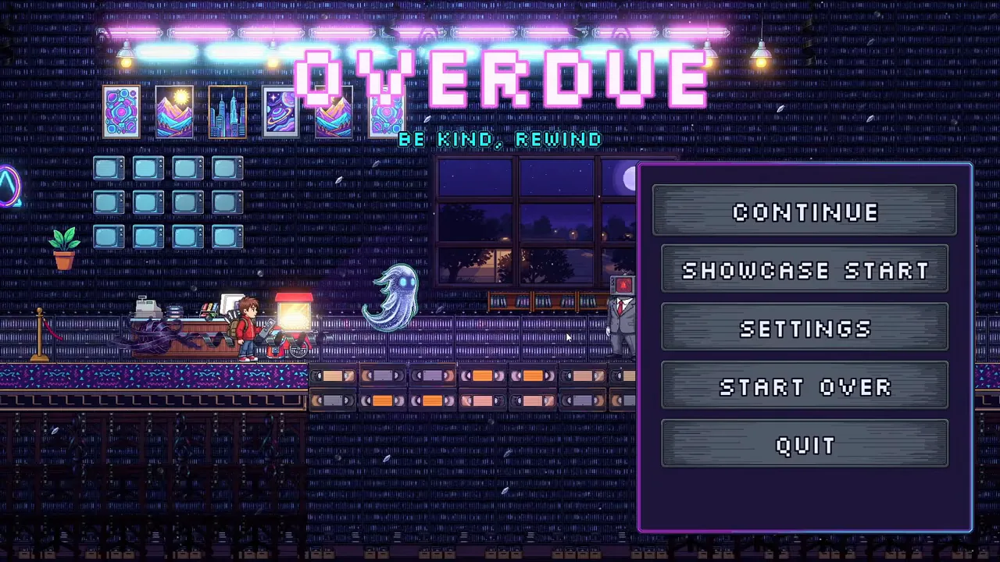
발표자는 결과만 보여 주지 않고 과정을 순서대로 짚어요. 전체 흐름을 한 장으로 그리면 이래요. 모델이 단계마다 달라지는 점을 눈여겨보세요.
flowchart LR A["도구 연결
SpriteCook · Godot AI"] --> B["아이디어 웹사이트
Sonnet 5.5"] B --> C["컨셉 이미지
Codex CLI"] C --> D["게임 디자인 문서
51쪽"] D --> E["1차 제작
Opus 5.5 Ultracode · 7시간 58분"] E --> F["직접 플레이 · 피드백"] F --> G["2차 수정
1시간 47분"]
Claude에 SpriteCook과 Godot 연결하기
먼저 Claude 데스크톱 앱에서 모델과 노력 단계를 골라요. 모델 메뉴에는 Opus 5.5, Fable 5.1, Sonnet 5.5, Haiku 5.5가 있고, 그 아래 Effort 항목이 'Ultracode'로 맞춰져 있어요. 발표자는 이 조합을 지금 가장 강한 조합이라고 불러요.
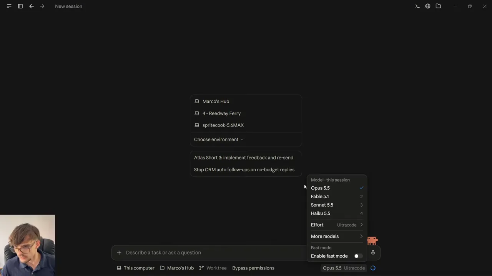
Claude가 게임을 만들려면 두 가지가 더 필요해요. 그림을 그릴 수단과, Godot 에디터를 직접 조작할 수단이에요. 둘 다 MCP로 붙여요. 구조를 그리면 이래요.
SpriteCook 붙이기
Customize에서 Plugins 탭으로 가 Add marketplace를 누르고, SpriteCook 저장소 주소를 넣은 뒤 Sync해요. 창 위쪽에는 믿을 수 있는 마켓플레이스만 추가하라는 경고가 붙어 있어요.
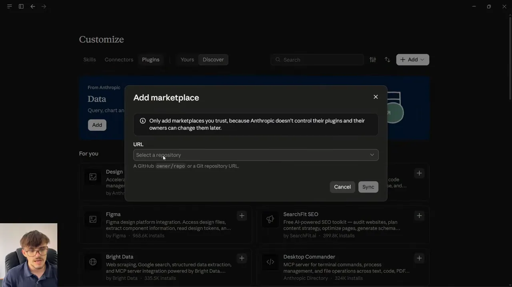
동기화가 끝나면 Plugins 목록에 SpriteCook이 'Added' 상태로 올라와요. 설명은 '스프라이트, UI(User Interface) 키트, 텍스처, 짧은 애니메이션을 Claude 안에서 만든다'예요.
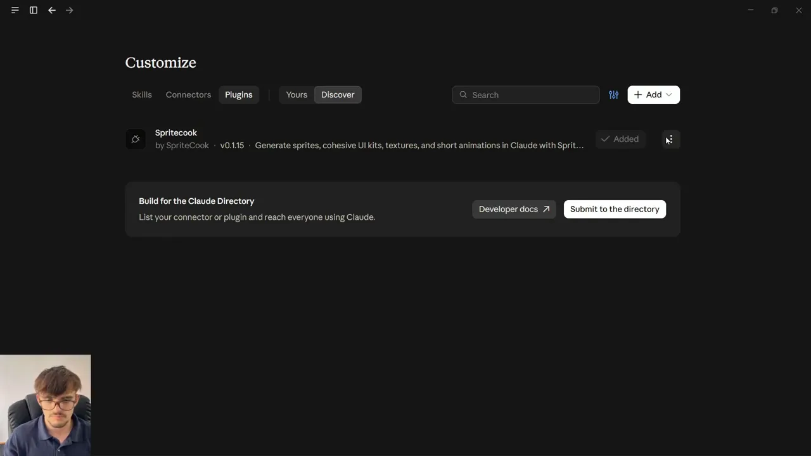
제대로 붙었는지 보려고, 가벼운 Sonnet 5.5에게 '64×64 플레이어 걷기 애니메이션'을 시켰어요. Claude는 SpriteCook 도구로 기본 캐릭터를 먼저 만들고, 그 캐릭터로 걷기 루프를 만들었어요. 아래는 SpriteCook 웹 화면에 남은 결과예요. 파란 티셔츠에 청바지를 입은 캐릭터가 걷는 자세로 서 있어요.
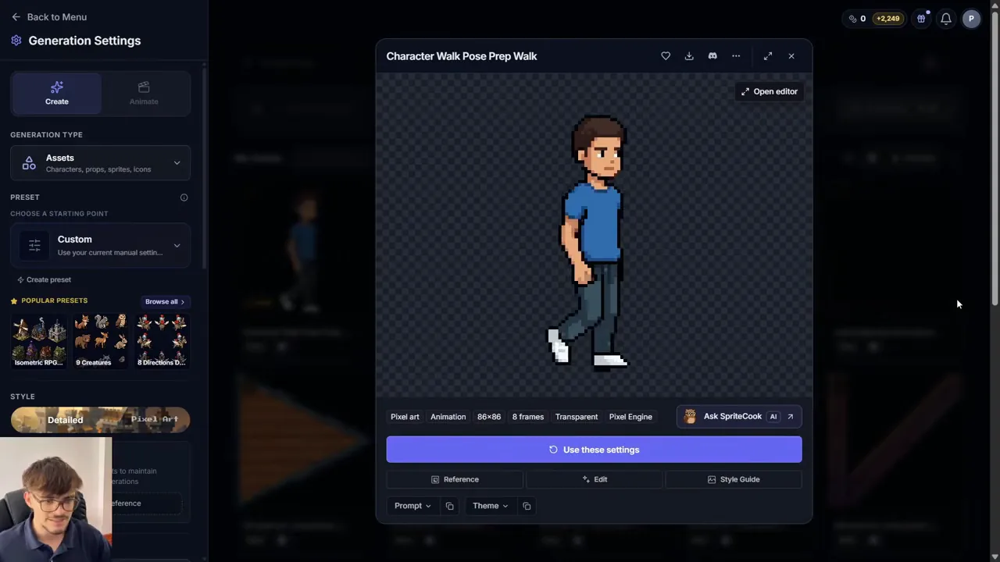
Godot AI 붙이기
두 번째는 Godot AI예요. 무료 오픈소스 플러그인이라 Godot 에디터의 Asset Store에서 'godot ai'로 찾아 받으면 돼요. 그다음 Project Settings → Plugins에서 켜고, 오른쪽 Godot AI 패널의 Clients & Tools에서 Claude 데스크톱을 설정해요.
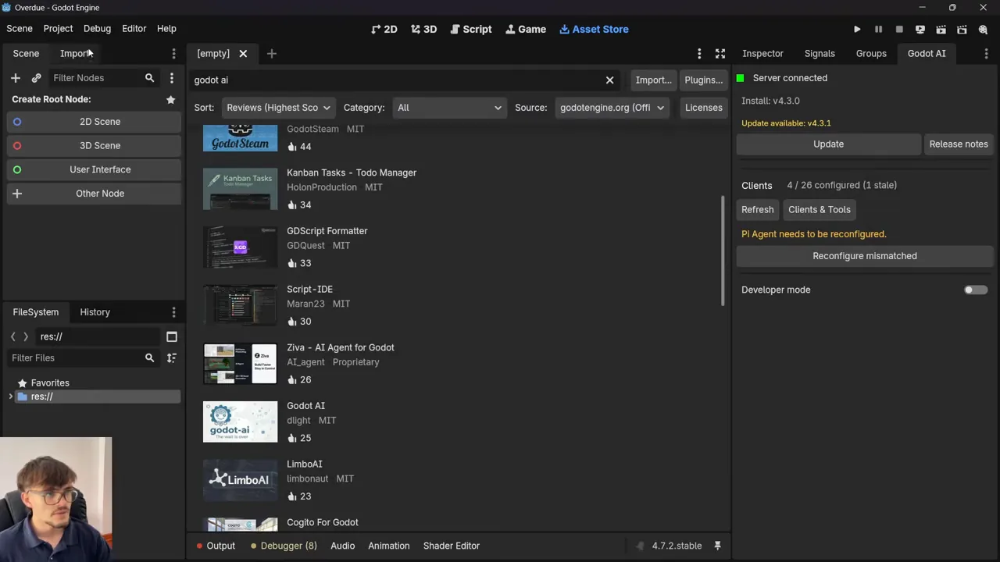
기획: 아이디어에서 게임 디자인 문서까지
기획은 무거운 모델 없이 Sonnet 5.5로 했어요. 무언가를 '고치고 고르는' 일에는 최고 성능이 필요 없다는 판단이에요. 요청은 한 줄이었어요. 'SpriteCook 영상에 쓸 2D 게임 아이디어를 웹사이트로 만들어 줘.' 장르는 2D 메트로배니아로 정했어요. 전에 올린 메트로배니아 영상의 반응이 좋았기 때문이에요.
아이디어 카드와 컨셉 이미지
Claude는 아이디어 다섯 개를 카드로 정리한 아티팩트를 만들었어요. 카드마다 컨셉 이미지와 몇 문장짜리 하이 콘셉트가 붙어요. 왼쪽 카드가 Overdue, 오른쪽이 Poltergeist Plaza예요. Overdue 카드에는 'MY PICK' 표시가 달려 있어요.
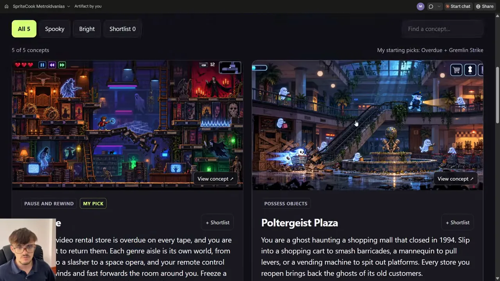
컨셉 이미지는 Claude가 Codex CLI(Command Line Interface)를 불러서 만들었어요. Claude에게 'Codex CLI로 이미지를 만들고 싶다'고 하면 Codex 계정 로그인을 요청해요. Codex를 직접 쓰지 않은 이유를 묻자, 발표자는 요즘은 Claude 하나로 다 하는 게 편해서라고 답해요.
첫 컨셉 이미지는 메트로배니아처럼 보이지 않았어요. 다시 그려 달라고 하자, 아래처럼 옆으로 스크롤되는 2D 화면이 나왔어요. 위쪽에 하트 체력과 정지·되감기·빨리감기 버튼이, 화면 가운데에 유령과 테이프 적이 있어요.
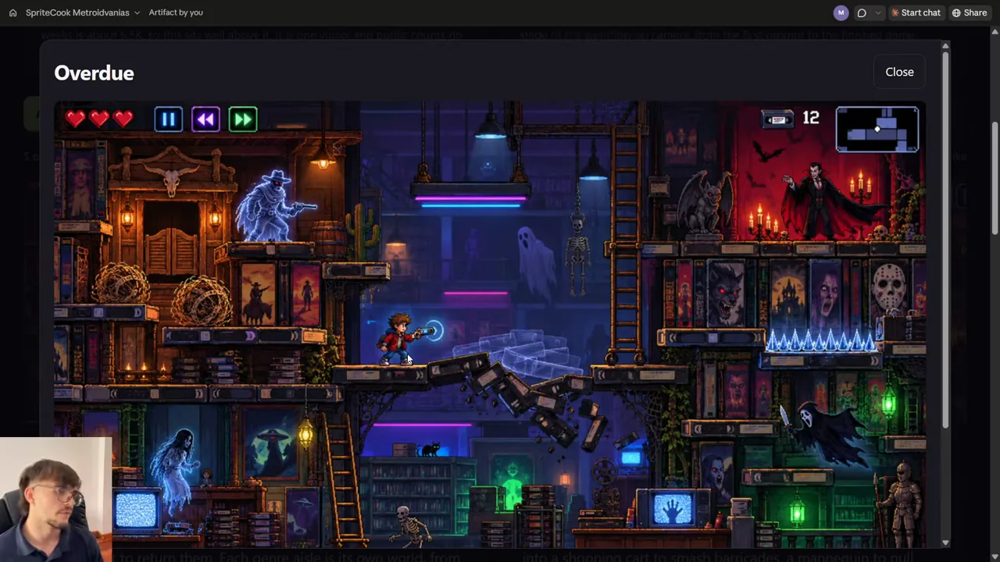
51쪽짜리 게임 디자인 문서
Overdue를 고른 뒤 '모든 메커니즘을 담은 게임 디자인 문서를 만들어 달라'고 했더니 51쪽이 나왔어요. 발표자는 이걸 다 읽지 않아요. '어떻게 이기나? 어떻게 지나? 레벨은 어떻게 생겼나?'를 Claude에게 묻고, 상호작용 오브젝트를 더하거나 빼는 식으로 필요한 곳만 고쳐요.
아래는 문서의 '6.2 The 30 rooms' 부분이에요. 방 번호(S01, S02 …), 이름, 화면 크기, 내용, 되감기 상자, 골드 테이프 개수를 표로 정리해 뒀어요.
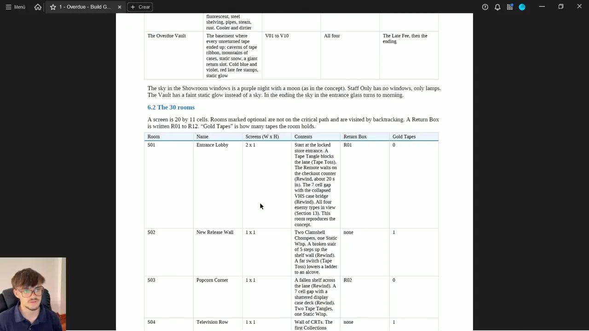
발표자는 이 문서가 두 가지 지침이 된다고 말해요. Claude가 게임 로직을 짤 때의 지침, 그리고 SpriteCook으로 어떤 그림을 만들어야 하는지의 지침이에요.
1차 제작: Opus 5.5에 통째로 맡기기
준비가 끝나면 Godot 프로젝트 안에서 새 세션을 열고, Opus 5.5 Ultracode에게 한 번에 지시해요. 화면의 프롬프트를 보면 요구가 꽤 구체적이에요.
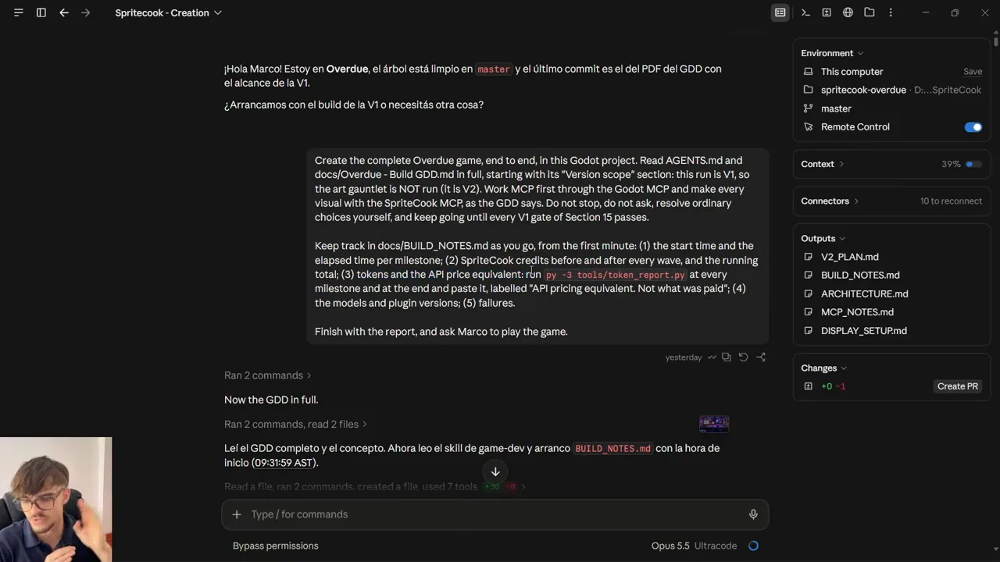
프롬프트를 정리하면 이래요.
AGENTS.md와 GDD(Game Design Document)를 끝까지 읽고, 그중 V1 범위만 만들어요.- Godot 작업은 Godot MCP로, 모든 그림은 SpriteCook MCP로 해요.
- 멈추지 말고 묻지 말고, 사소한 결정은 스스로 내려요.
docs/BUILD_NOTES.md에 걸린 시간, SpriteCook 크레딧, 토큰과 API 가격 환산, 쓴 모델과 플러그인 버전, 실패를 계속 적어요.
Claude는 그림 방향을 'HD(High Definition) 픽셀 아트'로 잡았어요. 픽셀 아트지만 해상도가 큰 편이라 캐릭터가 세밀해 보이는 스타일이에요. 작업 중에는 게임 화면을 직접 캡처해서 결과를 검증했고, 레벨 레이아웃을 만드는 데만 몇 시간이 걸렸어요.
시점이 다른 에셋 잡아내기
발표자는 기다리는 동안 SpriteCook 계정을 들여다보다가 문제를 발견했어요. 대여점 계산대 소품이 옆에서 본 그림이 아니라, 위에서 비스듬히 내려다본 3/4 시점으로 나왔어요. 상판 윗면과 비스듬한 옆면이 함께 보여요.
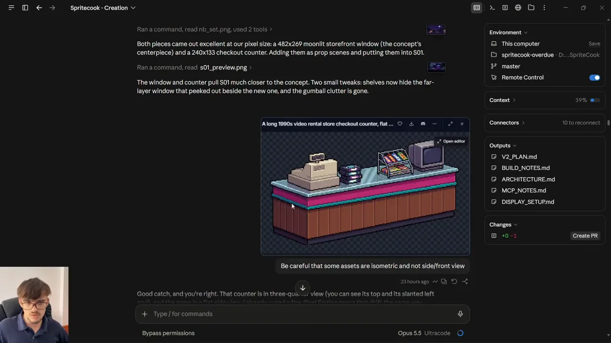
1차 결과 플레이
1차 결과는 메인 메뉴부터 그럴듯했어요. 처음부터 시작하면 대여점 로비에서 첫 능력인 되감기를 얻어요. 아래 화면에서 위쪽 'VERSION 1' 상자가 이 버전에 든 시간(7시간 58분)과 Claude 사용량(약 51%)을 보여 줘요. 바닥에 흩어진 테이프 더미가 되감기로 되살릴 수 있는 계단이에요.
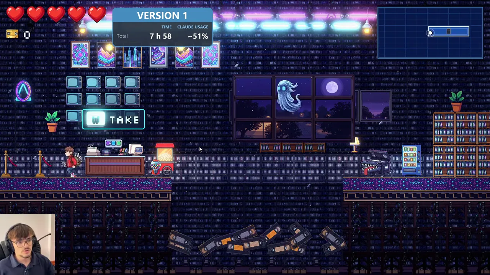
K를 누르면 되감기 효과가 나오고, 클릭으로 공격해요. 레버를 켜고 끄는 장치도 있고, 보라색으로 빛나는 곳에 되감기를 쓰면 무너진 계단이 다시 쌓여요. 발표자는 적의 디자인을 특히 칭찬해요. 반대로 왼쪽으로 갈 때 카메라가 뒤집히는 움직임과, 다시 쌓인 계단의 모양은 마음에 들지 않았어요.
Godot 에디터를 열면 규모가 보여요. 왼쪽 파일 목록에 방 씬이 구역별로 10개씩, 모두 30개 있고, 열어 보는 방마다 배경과 소품이 꾸며져 있어요.
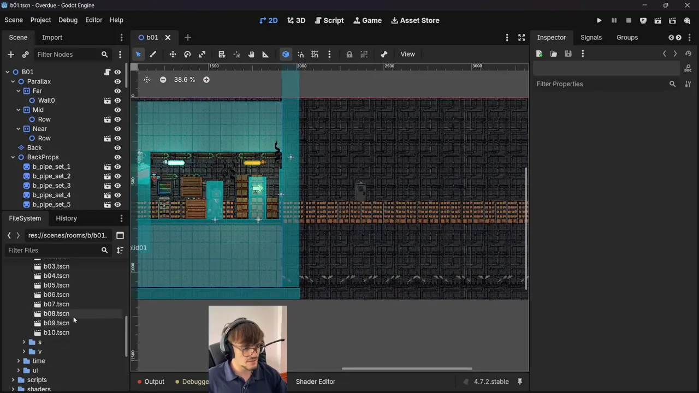
플레이테스트 피드백과 2차 수정
직접 플레이한 뒤, 고칠 점을 스크린샷과 함께 한 메시지로 모아 보냈어요. 메시지 위에 붙은 이미지 네 장이 'Img 1', 'Img 2'처럼 번호로 불려요. 덕분에 '이 장면의 이 부분'을 말로 길게 설명하지 않아도 돼요.
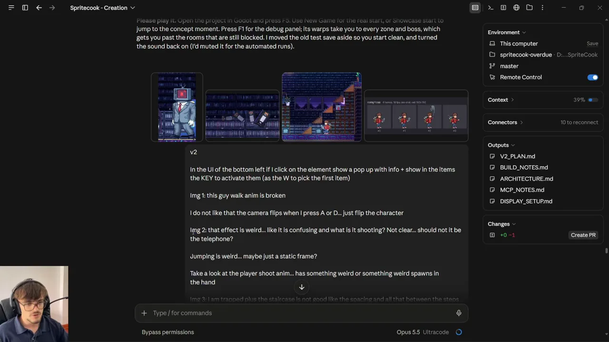
보낸 피드백을 묶어 보면 이래요.
| 무엇이 | 문제 |
|---|---|
| 이미지 1 — 적 캐릭터 | 걷기 애니메이션이 깨졌어요 |
| 이미지 2 — 사격 효과 | 무엇을 쏘는지 알 수 없어요. 스프라이트 탓인지 꼬리 효과 탓인지 모르지만 어색해요 |
| 이미지 3 — 계단 | 계단 모양이 별로이고, 벽과 계단 사이에 끼어 버렸어요 |
| 주인공 사격 애니메이션 | 한 프레임에 손에 이상한 게 생겨요 |
| 카메라 | A·D를 누를 때 카메라가 뒤집혀요. 캐릭터만 뒤집어 달라고 했어요 |
| 진행 속도 | 영상에 30개 방을 다 보여 줄 수 없어서 '익스프레스 모드'를 요청했어요 |
사격 애니메이션 문제는 Claude가 보여 준 프레임 시트에서 바로 보여요. 'remy/toss' 4프레임 중 세 번째(#2)에만 손 위로 흐릿한 물체가 솟아 있어요.
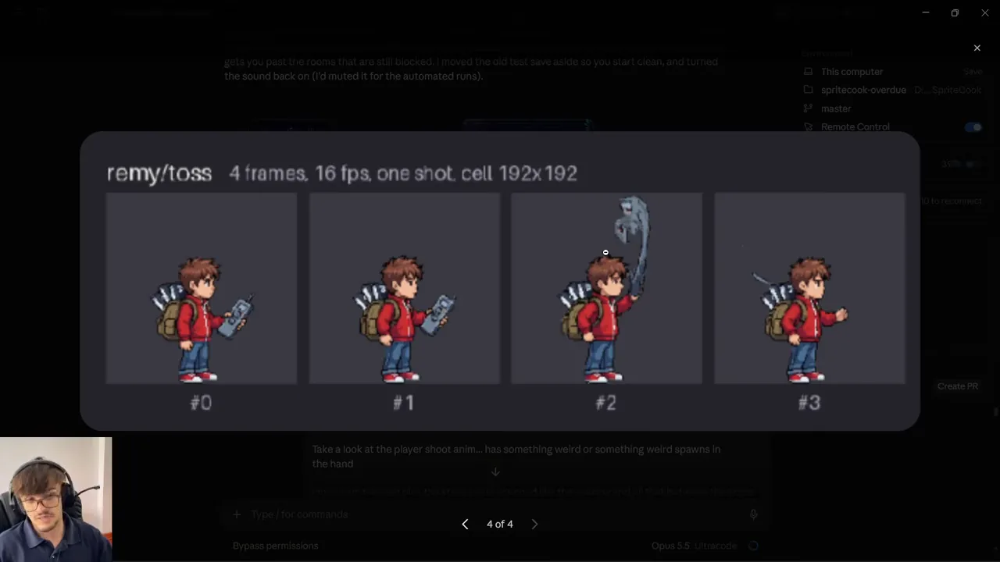
익스프레스 모드는 가장 좋은 방 다섯 개쯤만 몇 분 안에 지나가는 모드예요. 그 밖에 UI도 여러 군데 손봤어요. 2차 작업은 1시간 47분 걸렸어요.
2차 결과: 능력 여섯 가지와 보스
2차 결과는 익스프레스 모드로 보여 줘요. 먼저 바뀐 점부터 보면, 사격이 테이프를 던지는 모양으로 바뀌어 훨씬 알아보기 쉬워졌고 능력 설명도 분명해졌어요. 1차에서 어색하던 계단도 다시 그려졌어요. 아래는 되감기로 다시 쌓은 계단이에요. 나무 계단이 한 칸씩 고르게 올라가요.
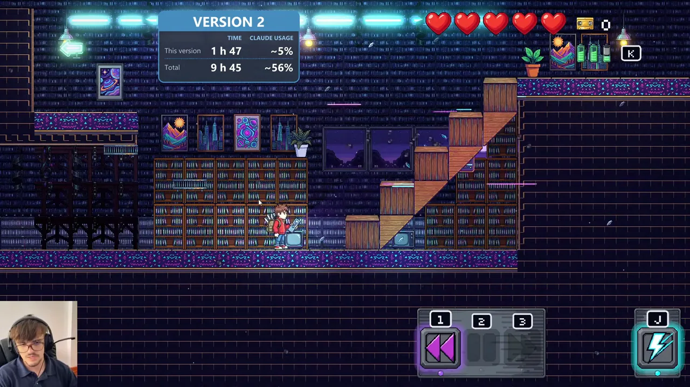
시간 능력 세 가지
능력은 숫자 키 1·2·3으로 고르고 K로 써요. 화면 오른쪽 아래 1·2·3 칸에 얻은 능력이 차례로 채워져요.
| 키 | 능력 | 하는 일 |
|---|---|---|
| 1 | 되감기(Rewind) | 무너진 계단·발판을 되돌려요 |
| 2 | 정지(Pause) | 가시 함정과 적을 얼려요 |
| 3 | 빨리감기(Fast forward) | 타이머·파이프·바닥을 빠르게 돌려요 |
정지를 쓰면 가시 함정이나 움직이는 장치가 그 자리에서 멈춰요. 아래 화면 가운데 천장에서 내려오는 금속 기둥과 빨간 받침이 위아래로 찍어 누르는 프레스 장치예요. 오른쪽 아래 2번 칸에는 막 얻은 정지 아이콘이 들어와 있어요.
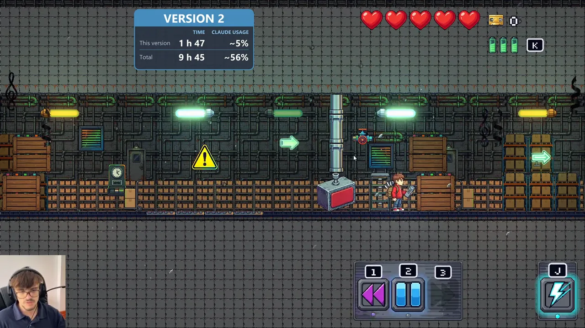
빨리감기는 물을 채우는 타이머 같은 장치에 써요. 오른쪽 아래 물웅덩이가 그 장치이고, 3번 칸에 빨리감기 아이콘이 생겼어요. 쓰면 기다려야 할 시간이 확 줄어요.
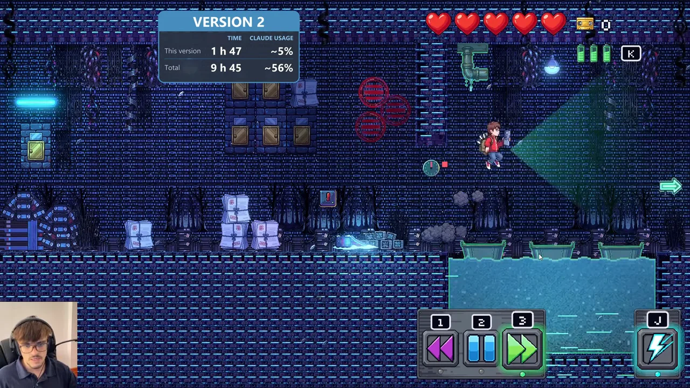
공격도 세 가지
공격은 따로 있어요. 마우스 왼쪽 클릭이 기본 사격이고, L을 누르면 나무를 태우는 파이어볼이 나가요. 세 번째는 '스크림'이에요. 획득하면 아래처럼 'SCREAM UNLOCKED' 안내가 떠요. 적을 밀어내고 유리를 깨며, I 키로 쏜다고 적혀 있어요. 오른쪽 아래 J·L·I 칸이 공격 세 가지예요.
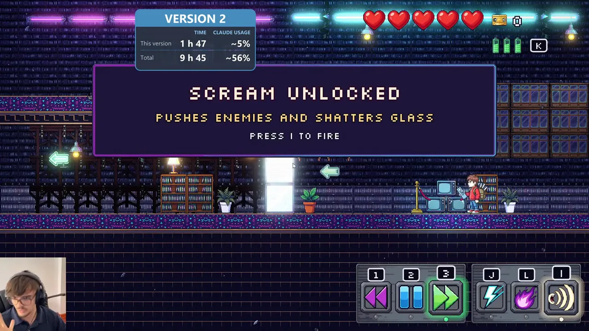
보스와 디버그 패널
마지막은 로봇 보스예요. 빛나는 코어를 맞혀야 해요. 화면 위에 보스 체력 막대가 있고, 오른쪽에 붉은 로봇이 서 있어요. 발표자는 버티기 어려워지자 F1로 디버그 패널을 열어 무적(갓 모드)을 켰어요. 왼쪽 위 'GOD MODE' 표시가 그 흔적이에요.
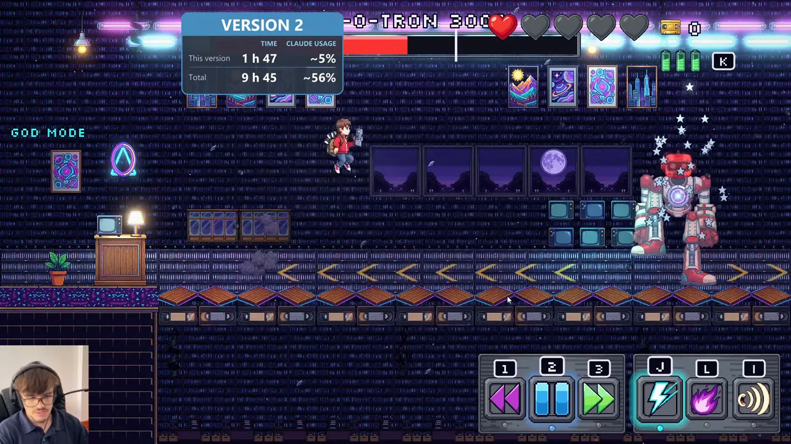
보스를 쓰러뜨리면 'EXPRESS CLEAR' 화면이 떠요. 기록은 3분 4초 13이에요.
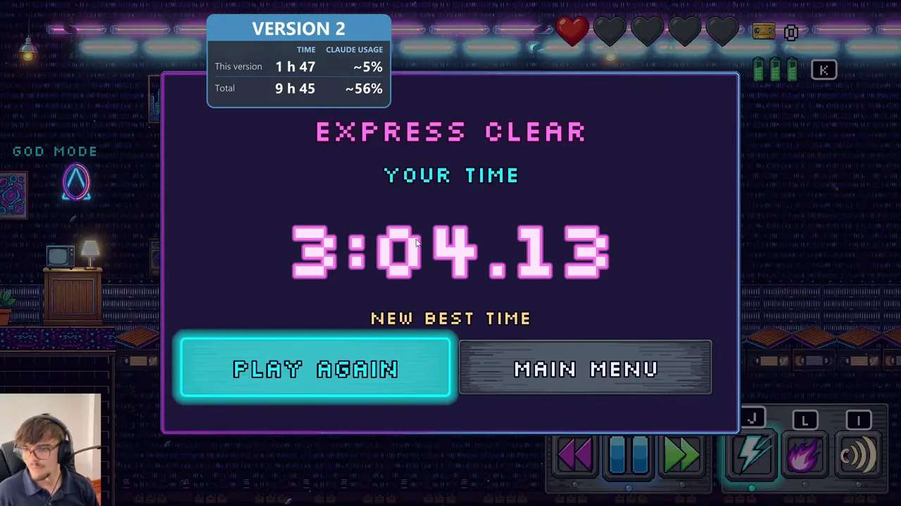
본편 방들과 스프라이트 모음
본편은 훨씬 천천히 능력을 하나씩 열어 가요. 디버그 패널로 방을 옮겨 다녀 보면 구역마다 색과 분위기가 달라요. 마지막으로 Claude가 정리해 둔 스프라이트 모음 화면을 보여 줘요. 아래 왼쪽은 유령 적의 여러 상태, 오른쪽은 붉은 눈의 촉수 적이에요.
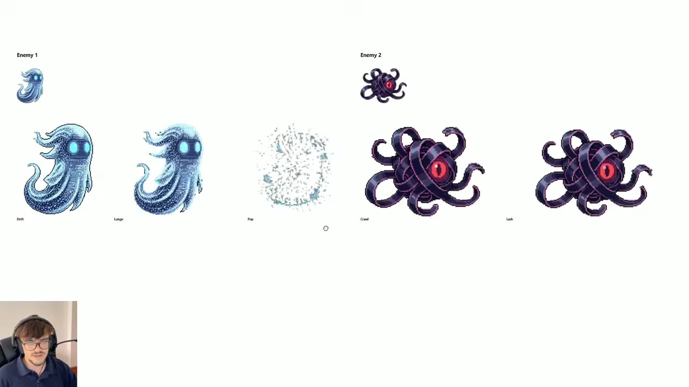
레벨 소품도 같은 모음에 묶여 있어요. 상자, 파이프, 경고 표지, 하트와 테이프 같은 아이템, 되감기·빨리감기 버튼 같은 UI 조각까지 한 장에 정리돼 있어요. 발표자에 따르면 보스는 부위별로 따로 그린 뒤 Godot 안에서 조립해 부위마다 따로 움직이게 했어요.
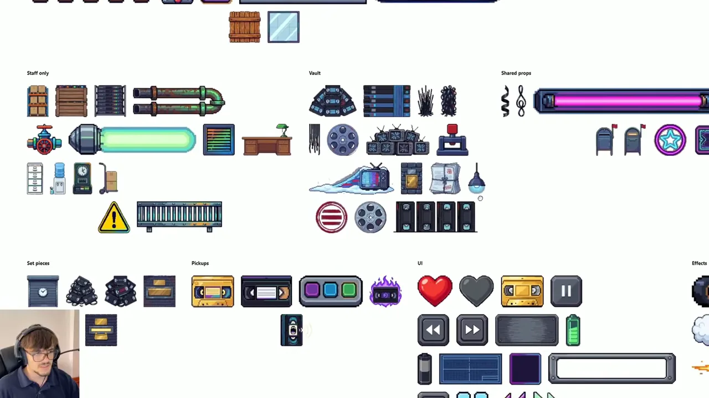
시간과 비용, 얼마나 들었나요?
프롬프트에서 기록을 남기라고 했기 때문에, 마지막에 Claude가 'Build time and cost' 표를 만들어 줬어요. V1·V2·합계 세 열로 SpriteCook 크레딧, 걸린 시간, Claude 주간 한도, 토큰, API 가격 환산을 나란히 적었어요.
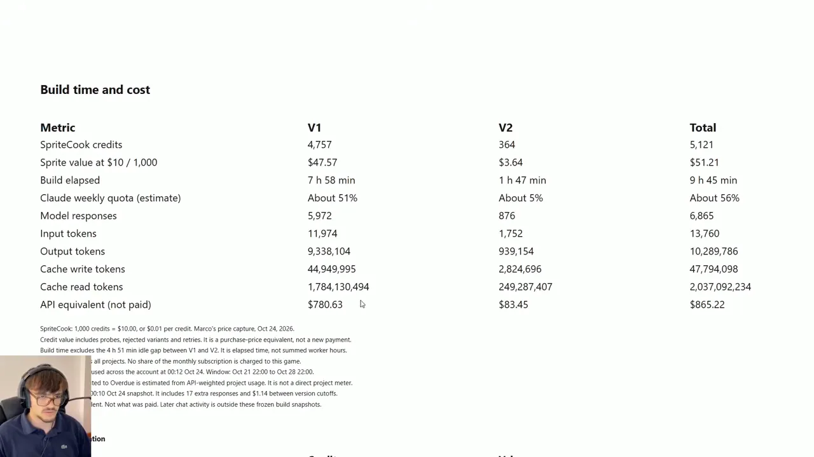
표의 주요 줄을 옮기면 이래요.
| 항목 | V1 | V2 | 합계 |
|---|---|---|---|
| SpriteCook 크레딧 | 4,757 | 364 | 5,121 |
| 크레딧 가치 (1,000 = 10달러) | 47.57달러 | 3.64달러 | 51.21달러 |
| 걸린 시간 | 7시간 58분 | 1시간 47분 | 9시간 45분 |
| Claude 주간 한도 (추정) | 약 51% | 약 5% | 약 56% |
| 출력 토큰 | 9,338,104 | 939,154 | 10,289,786 |
| 캐시 읽기 토큰 | 1,784,130,494 | 249,287,407 | 2,037,092,234 |
| API 가격 환산 (낸 돈 아님) | 780.63달러 | 83.45달러 | 865.22달러 |
V1과 V2를 같은 눈금에 놓으면 차이가 분명해요. 처음부터 만드는 1차가 시간과 비용 대부분을 먹었고, 피드백을 반영하는 2차는 그 열 분의 일쯤이에요.
말과 표가 다른 숫자
발표자가 말로 한 숫자 몇 개는 화면 표와 맞지 않아요. 표가 Claude의 기록이니 표를 기준으로 읽는 게 안전해요.
- SpriteCook 비용을 '크레딧 5,000개, 약 500달러'라고 했지만, 같은 화면의 단가(1,000크레딧 = 10달러)대로면 5,121크레딧은 51.21달러예요.
- API 가격 환산 합계를 '1,000달러 가까이'라고 했지만 표에는 865.22달러예요.
- 주간 한도는 한 번은 69%, 한 번은 56%라고 했어요. 13:17쯤 화면에는 'V2가 끝났을 때 주간 한도 69%'라는 문구가 보이는데, 이건 계정 전체 사용량이에요. 표의 약 56%는 이 게임 몫만 추정한 값이에요.
발표자는 Claude는 월 200달러짜리 Max 20x 구독으로 돌렸다고 해요. 그래도 1차만 보면 약 8시간에 780달러, 시간당 100달러 꼴이에요. 발표자는 게임이 예상보다 컸던 탓으로 봐요. 방 30개에 플레이 시간이 1시간이 넘으니, 규모를 줄였다면 비용도 훨씬 적었을 거라는 얘기예요.